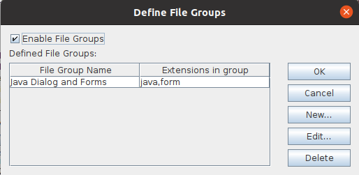

|
Define File Groups DialogFrom the Admin→Define File Groups... menu, you can display the Define File Groups dialog. You can use the Define File Groups dialog to enable and disable "File Group" behavior, as well as to define what file extensions should comprise a given file group. File Groups are a useful way to cause the client application to treat files that share the same name (except for their file extensions) as a single unit for version control operations. For example, if you develop code in C++, often when you want to modify a C++ source file, you need also to modify the header file associated with that source file. If you create a C++ file group, and include cpp, and h files in that group, whenever you select either a .cpp file or a .h file, the client application will automatically select the other file(s) with the same name.  To Create a file group, follow these steps:
File extensions can exist in only one file group at a time. For example, you are not allowed to create a "C++ file group" that has "c,cpp,h" file extensions, and a "C file group" that has "c,h" extensions, since the "c,h" extensions overlap between the two groups. |
| © Copyright 2004-2010 Quma Software, Inc. All Rights Reserved. |